Gestión de dispositivos
Función encargada de realizar todas las llamadas a dispositivos de la instalación. Se utiliza un segmento en SCL para cada dispositivo.
Constantes de dispositivos
Para el uso de dispositivos en el programa del PLC, se utilizarán constantes en vez de números indicando la posición del array del dispositivo. De esta forma, se puede realizar un seguimiento mediante referencias cruzadas más efectivo, así como ver de manera visual las variables de cada dispositivo.
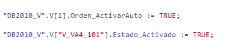
Para ello, se creará una tabla de variables por cada tipo de dispositivo que se tenga en el programa.

En cada tabla de variables, se declarará el mismo número de constantes que tengamos de cada dispositivo.
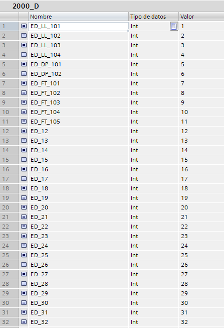
Multiplexado
Segmento encargado de configuración de multiplexado. Mediante un bucle FOR, se habilitan los multiplexados de todos los dispositivos.
{kind=link}
{kind=link}
{kind=link}
Salida analógica
Segmento encargado de llamada a función de gestión de salidas analógicas.
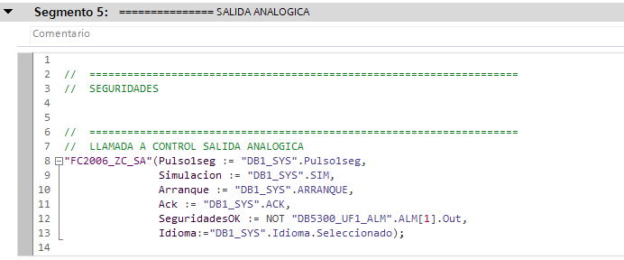
Los dispositivos con activación de salidas disponen de dos tipos de seguridades.
- A nivel de función:
- El bloque tiene una entrada de SeguridadesOK a nivel general, con esta señal se enclavan todos los dispositivos.
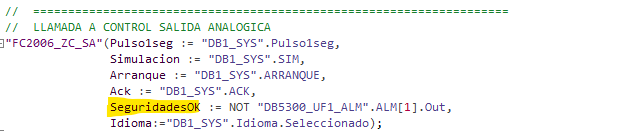
- A nivel de dispositivo:
- Cada dispositivo dispone de una variable de SeguridadesOK, en caso de querer diferenciar las seguridades por dispositivo.
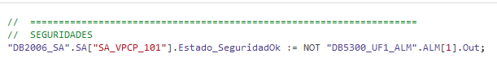
Válvulas
Segmento encargado de llamada a función de gestión de válvulas.
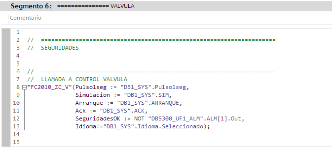
Los dispositivos con activación de salidas disponen de dos tipos de seguridades.
- A nivel de función:
- El bloque tiene una entrada de SeguridadesOK a nivel general, con esta señal se enclavan todos los dispositivos.
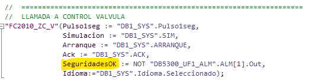
- A nivel de dispositivo:
- Cada dispositivo dispone de una variable de SeguridadesOK, en caso de querer diferenciar las seguridades por dispositivo.
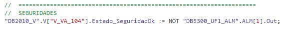
Motores
Segmento encargado de llamada a función de gestión de motores arranque directo.
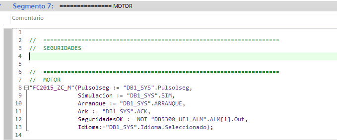
Los dispositivos con activación de salidas disponen de dos tipos de seguridades.
- A nivel de función:
- El bloque tiene una entrada de SeguridadesOK a nivel general, con esta señal se enclavan todos los dispositivos.
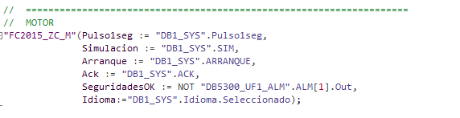
- A nivel de dispositivo:
- Cada dispositivo dispone de una variable de SeguridadesOK, en caso de querer diferenciar las seguridades por dispositivo.
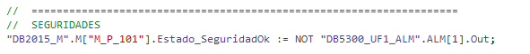
Motores con variador cableado
Segmento encargado de llamada a función de gestión de motor variador.
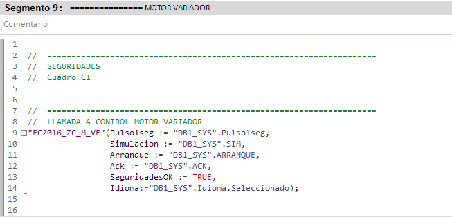
Los dispositivos con activación de salidas disponen de dos tipos de seguridades.
- A nivel de función:
- El bloque tiene una entrada de SeguridadesOK a nivel general, con esta señal se enclavan todos los dispositivos.
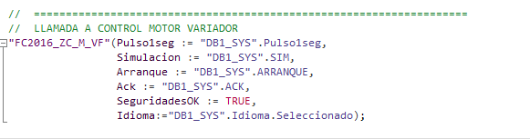
- A nivel de dispositivo:
- Cada dispositivo dispone de una variable de SeguridadesOK, en caso de querer diferenciar las seguridades por dispositivo.
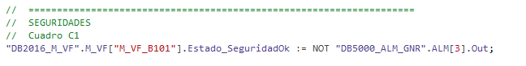
Tanques aire estéril
Segmento encargado de llamada a función de gestión de tanque aire estéril.
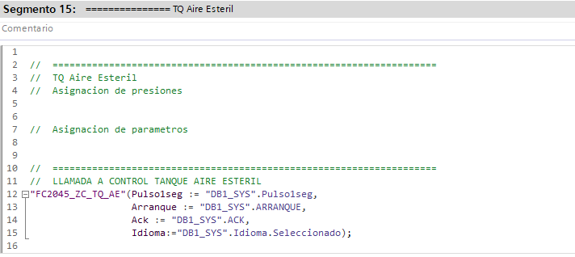
Para el correcto uso de este dispositivo, previa a la llamada al bloque de gestión hay que realizar un traspaso de valores y de parámetros.
- Asignación de presiones:
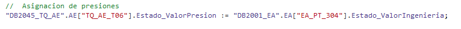
- Asignación de parámetros:
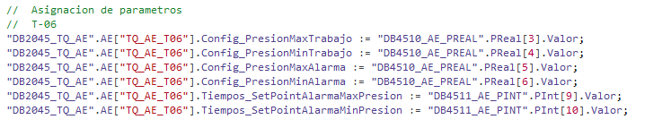
Totalizadores
Segmento encargado de llamada a función de gestión de totalizadores.
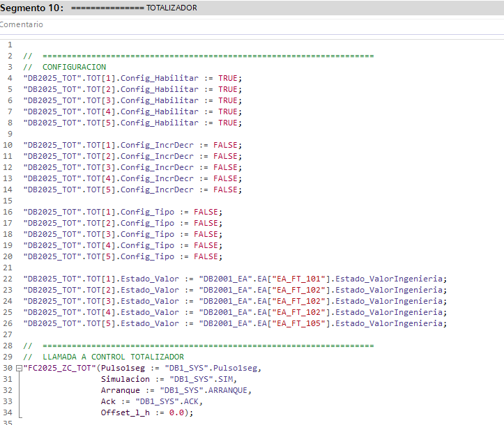
Para el correcto uso de este dispositivo, previa a la llamada al bloque de gestión hay que realizar la configuración y el traspaso de valores.
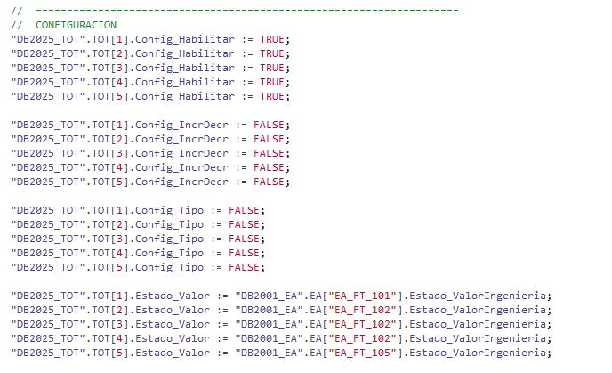